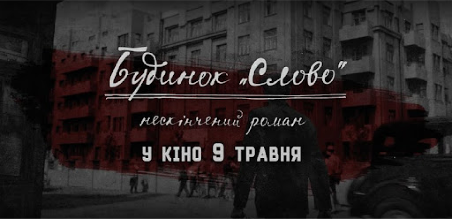
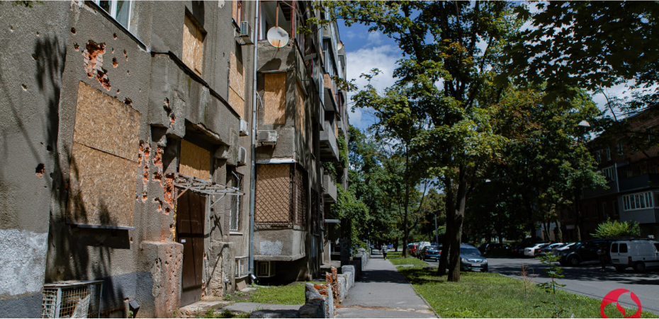

Будинок «Слово» став символом української радянської літератури — і в хорошому, і в кошмарному сенсах. Саме там зібралися найпрогресивніші голови свого часу. Саме туди з початком репресій почали регулярно навідуватися силовики. Зараз це ще й чудовий символ того, як треба правильно оберігати культурну пам'ять. На основі сумного, але потужного спадку «Слова» в останні роки народилося багато цікавих проектів: від документалки і віртуального музею до настільної гри. А скоро вийде ще й художній фільм
Радянській владі було дуже вигідно тримати всіх українських мислителів в одному місці і в перманентному страху.
Зараз у будинку мешкають звичайні люди, мало хто має відношення до покоління Українського Відродження. Але за останніх пару років будинок «Слово» все частіше виникає в медійному полі, навколо нього почали з'являтися проекти.
Настільна гра — проект Харківського літературного музею. Спочатку гра була саморобною, але у минулому році видали повноцінний тираж.
21 серпня 2019 року Постановою Уряду України житловий будинок «Слово» було внесено до Державного реєстру нерухомих пам'яток України.
7 березня 2022 року російський снаряд пошкодив будинок "Слово". Останні роки будинок працював як літературна резиденція.
Ще один фільм незабаром покажуть на екранах кінотеатру за 2024 рік.
Пошкодження пам`ятки через російську агресію ( 07.03.2022р)